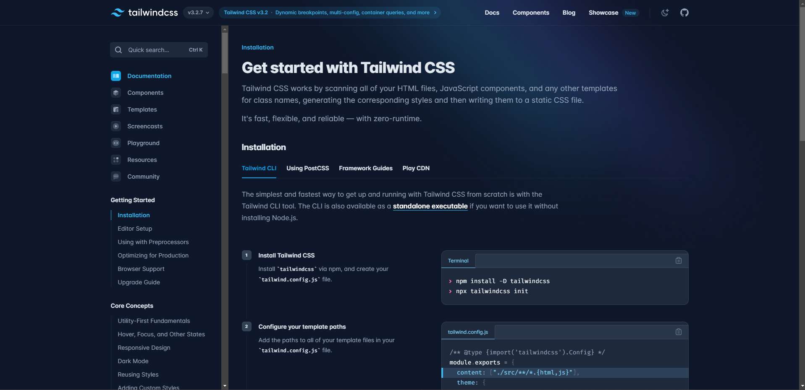

MURLOC TAVERN
Le projet que nous avions en classe était sur la création d’un site web sur le sujet de notre choix.
Pour ce faire, nous avons utilisé une plateforme en ligne qui s’appelle Glitch,
un éditeur de texte en ligne sur lequel on voit l'avancé en direct mais aussi de pouvoir partager ce projet avec un collaborateur.
Ici mon projet était un bar gaming à thème.

Pour commencer j’ai du définir le style de ma page.
Afin d’atteindre mes objectifs j’ai donc utilisé du CSS mais surtout TAILWINDCSS.
Et j’ai ajouté un formulaire comprenant quelques questions concernant mon site.
Le projet avait pour but de vendre des produits et/ou services.
J’ai donc opté pour les deux solutions, puisque Murloc Tavern est un bar gaming à thème,
nous proposons des boissons originales avec des forfaits pour la salle gaming.
A la fin j’ai du présenter mon projet devant la classe.
Compétences
Organiser son développement professionnel :
- Mettre en place son environnement d’apprentissage personnel en se formant tout le long du projet notament avec tailwindcss sur divers techniques.